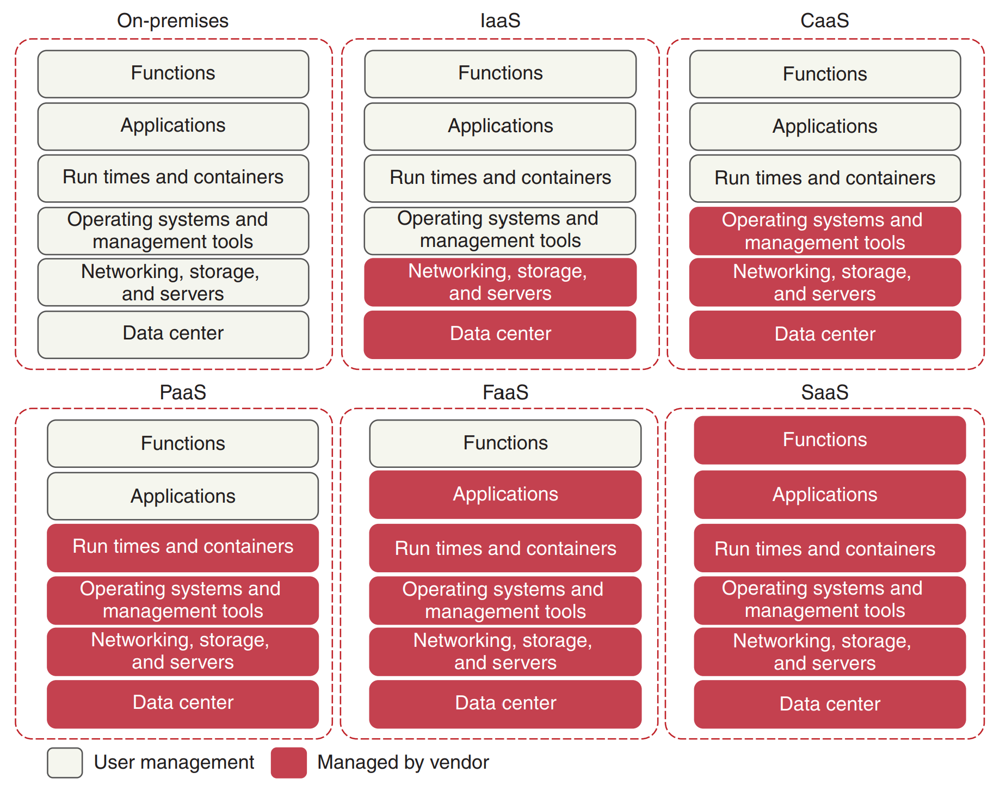
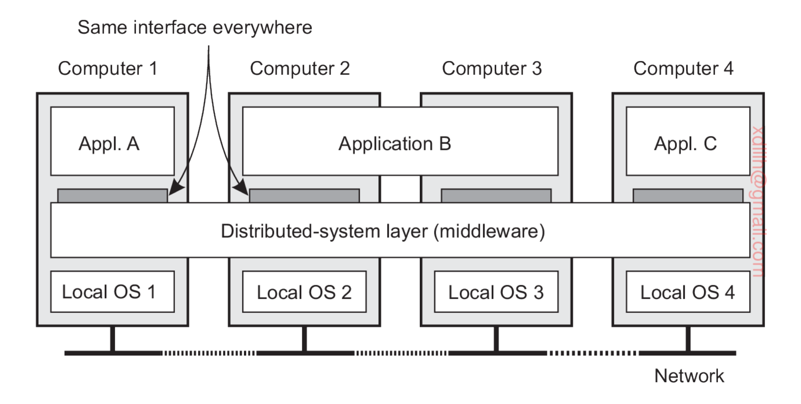
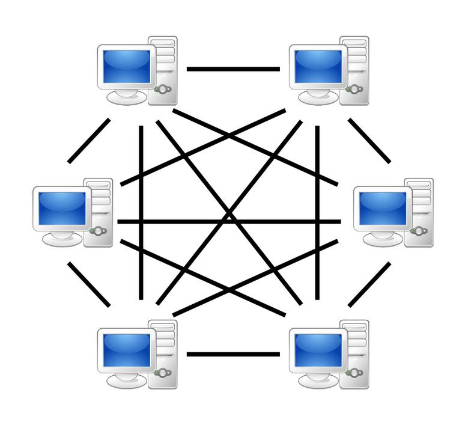

一个分布式系统由多个通过网络互联的独立自治的计算节点组成，这些计算节点基于消息传递机制进行相互协作，以完成共同的目标。
从普通用户角度看，分布式系统是计算节点内聚在一起的一个整体，用户在使用系统功能时，往往无法察觉分布式系统的内部构成和节点之间的协作关系。
分布式计算则是指：多个通过网络互联的计算节点通过相互协作共同完成计算任务。
| 要点 | 解释 |
|---|---|
| 多个计算节点 | 计算节点一般指单个计算机，也可以是计算机中的一个进程、线程或虚拟机。计算节点可抽象为有限状态机（图灵机）。 |
| 网络互联 | 节点之间可以通过有线、无线等任意网络通信方式互联。对物理拓扑结构不做明确限定。 |
| 独立自治 | 每个节点都有自己独立的CPU、独立的时钟，发生错误的时机和模式也相互独立。不同节点的动作是并发（同时）进行的。 |
| 相互协作以完成共同目标 | 各个节点通过分工合作，共同完成一个整体任务，单个节点无法独立完成该任务。 |
| 消息传递模型 | 节点之间通过发送和接收消息进行通信，并非内存共享模型。 |
不是分布式系统。原因如下：
多CPU系统本质上属于并行计算的范畴（多CPU并行，通常为一致性内存访问UMA架构），而非分布式计算。
可以。原因如下：

图1：分布式系统整体架构概览 — 展示了分布式计算节点、网络互联与协作关系
分布式系统的核心通信模型是消息传递模型，它与并行计算中常用的共享内存模型有着本质区别。
主要难点：
主要难点：
| 对比维度 | 共享内存模型 | 消息传递模型 |
|---|---|---|
| 通信方式 | 隐式（读写共享变量） | 显式（发送/接收消息） |
| 公共状态 | 有 | 无（Share Nothing） |
| 通信速度 | 快（内存访问级别） | 慢（网络传输级别） |
| 耦合程度 | 紧耦合 | 松耦合 |
| 容错性 | 差（一个单元崩溃影响全局） | 好（节点独立失效） |
| 可扩展性 | 受限于总线/内存带宽 | 理论上可无限扩展 |
| 典型应用 | 多线程编程、多核并行（OpenMP） | 分布式系统、MPI、微服务 |
| 同步机制 | 锁、信号量、条件变量 | 消息、共识协议 |
从底层到高层，并行计算可分为以下层次：
| 层次 | 内容 | 编程模型/工具 |
|---|---|---|
| 指令级并行 | 多指令并行；单指令多数据并行（向量指令） | CPU硬件自动实现 |
| CPU内流水线并行 | 指令流水线 | CPU硬件自动实现 |
| CPU多核并行 | 多线程编程 | OpenMP、Pthreads、Intel TBB |
| 多CPU并行（UMA） | 一致性内存访问，多线程编程 | Pthreads、OpenMP |
| 多CPU并行（NUMA） | 非一致性内存访问，超级计算机 | MPI、OpenMP |
| GPU并行 | 单指令多数据并行 | CUDA、OpenCL |
| 多机并行 | 基于多台计算机的分布式计算 | MPI、MapReduce、Spark |
分布式计算属于多机并行，是并行计算的一种特殊形式。
并发（Concurrency）：
并行（Parallelism）：
核心区别： 并发关注的是任务的组织与调度（逻辑上的同时），并行关注的是任务的加速执行（物理上的同时）。
| 类别 | 框架/工具 |
|---|---|
| 多核并行 | OpenMP、Pthreads、Intel TBB、Cilk Plus |
| 分布式计算 | MPI、MapReduce、Hadoop、Spark |
| GPU并行 | CUDA、OpenCL |
| 图计算 | Pregel、GraphX |
| 深度学习 | TensorFlow、PyTorch、MXNet |
| 其他 | Celery、Dask |
云计算是一种计算资源的应用模式/服务模式/交付模式（站在用户角度看），不是一种技术。其核心理念是：
| 模型 | 全称 | 含义 |
|---|---|---|
| IaaS | Infrastructure as a Service | 基础设施即服务：提供虚拟化的计算资源（虚拟机、存储、网络） |
| PaaS | Platform as a Service | 平台即服务：提供开发和部署应用的平台环境 |
| SaaS | Software as a Service | 软件即服务：提供完整的软件应用，用户直接使用 |
| CaaS | Container as a Service | 容器即服务：提供容器化应用的运行环境 |
| FaaS | Function as a Service | 函数即服务：Serverless Computing，按函数执行计费 |
| 其他 | BaaS / DaaS / NaaS | 后端即服务、数据即服务、网络即服务 |
分布式计算是实现云计算的核心技术之一。云计算是目标，分布式计算是手段。
云计算的支撑技术包括：分布式计算、虚拟化、网络技术等。
| 目的 | 说明 |
|---|---|
| 提高计算能力 | 通过多节点并行处理，缩短运算时间 |
| 提高存储能力 | 聚合多台机器的存储空间，突破单机存储上限 |
| 提高网络吞吐能力 | 提高并发访问处理能力 |
| 提高可靠性 | 通过冗余和复制解决局部失效问题，使系统在部分节点故障时仍能正常运行 |
| 提高安全性 | 通过分散部署解决被局部攻击的问题 |
| 提高可扩展性 | 通过水平扩展（增加节点）解决集中式系统的瓶颈问题 |
| 实现资源共享 | 不同节点之间共享数据、软件、硬件等资源 |
| 实现跨越时空的协同服务 | 发挥不同地理位置节点的优势，提供跨区域的协同服务 |
| 特性 | 说明 |
|---|---|
| 计算（存储）效率 | 系统完成任务的吞吐量和响应时间 |
| 可扩展性/可伸缩性（Scalability） | 垂直可扩展性（升级单机硬件）、水平可扩展性（增加节点数量，支持节点热插拔） |
| 容错性（Fault Tolerance/Reliability） | 可用性（Availability）：系统持续正常运行的时间比例；可恢复性（Recoverability）：故障后恢复的能力 |
| 透明性（Transparency） | 对用户隐藏分布式系统的内部复杂性（详见1.7节） |
| 开放性（Openness） | 系统是否基于开放标准，能否与异构系统互操作 |
| 安全性（Security） | 保密性、完整性、认证性、隐私保护、可用性 |
| 可观测性（Observability） | 运维者能否准确获取各节点的运行状态和参数 |
| 可维护性（Maintainability） | 针对具体节点能否快速上线/下线/升级/更改配置 |
透明性是分布式系统设计的核心目标之一，目的是让用户感觉不到系统是分布式的。以下为九种透明性：
| 透明性类型 | 描述 |
|---|---|
| 访问透明性 | 数据的表示、存储和底层访问方式被隐藏，用户不需要知道数据如何编码和存储 |
| 节点透明性 | 实际提供服务的物理计算机节点标识被隐藏，用户不知道是哪个节点在处理请求 |
| 迁移透明性 | 用户感觉不到对象/资源在不同节点之间的迁移过程 |
| 复制透明性 | 用户感觉不到对象/资源存在多个副本，系统自动管理副本的创建和维护 |
| 并发透明性 | 多个用户能并发地使用共享资源而互不干扰，系统自动处理并发冲突 |
| 伸缩透明性 | 分布式系统内部节点的增减被隐藏，用户不受系统规模变化的影响 |
| 错误透明性 | 用户感觉不到分布式系统的局部错误，系统自动进行故障转移和恢复 |
| 性能透明性 | 系统能够自动通过增减资源以适应负载变化，用户可以配置而非修改程序 |
| 移动透明性 | 用户能够在系统内移动（如切换设备、更换位置）而不会影响到正在使用的功能 |
分布式系统设计面临以下核心挑战：
| 挑战 | 详细说明 |
|---|---|
| 自治（Autonomy） | 各节点有自己独立的时钟、独立的内部状态，无法通过全局变量或全局时钟进行协调 |
| 局部视图（Partial View） | 每个节点只能看到整个系统的某个局部视图，无法获取全局即时状态 |
| 故障处理（Fault Handling） | 必须处理网络故障、局部节点故障——在分布式系统中，局部失效是常态而非异常 |
| 开放性（Openness） | 节点数目在变动，网络情况在变动，系统需要适应动态变化的环境 |
| 可扩展性（Scalability） | 节点增加时性能须合理增长，不能因节点增多而导致性能下降 |
| 异构性（Heterogeneity） | 各个节点的软硬件差异性很大（不同操作系统、不同硬件架构、不同编程语言） |
| 安全性（Security） | 保密性、完整性、认证性、隐私、可用性——在开放网络中保护数据和通信 |
| 透明性（Transparency） | 应用层或用户无法察觉位置、并发、复制、故障、移动、伸缩、性能等变化 |
| 观测问题（Observability） | 运维者如何准确获取各个节点的运行状态和参数 |
| 维护问题（Maintainability） | 针对具体节点如何快速上线/下线/升级/更改配置 |
| 服务质量保证（QoS） | 如何保证系统在各种负载和故障情况下都能提供可接受的服务质量 |
案例一：分布式数据库（一主多活架构）
案例二：协同文档编辑（多主多活架构）
案例三：复制状态机（高可用服务）
在设计实际生产环境的分布式系统时，必须考虑容忍以下类型的错误：
| 对比维度 | 失效停止（Fail-Stop）错误模型 | 拜占庭（Byzantine）错误模型 |
|---|---|---|
| 定义 | 节点一旦发生故障就停止运行，不再发送任何消息，其他节点可以明确检测到该节点已失效 | 节点可能以任意方式发生故障，包括发送错误/矛盾信息、恶意行为、间歇性故障等 |
| 故障表现 | 确定性：要么正常工作，要么完全停止 | 任意性：可能发送相互矛盾的消息给不同节点 |
| 检测难度 | 容易：通过心跳或超时机制即可检测 | 极其困难：需要多数派投票和复杂的共识协议 |
| 容错条件 | 只需超过半数节点正常即可达成共识（如 $n > 2f$） | 需要超过 $2/3$ 的节点正常（如 $n > 3f$） |
| 典型场景 | 服务器宕机、进程崩溃、电力故障 | 恶意攻击、软件Bug导致的不一致行为、被黑客控制的节点 |
| 解决难度 | 相对简单，Paxos/Raft可解决 | 非常复杂，需要PBFT等拜占庭容错算法 |
Fail-Stop是分布式系统理论中最常用的故障假设模型，Paxos和Raft等经典共识协议都基于此假设。拜占庭模型主要用于区块链等对抗性环境。
按任务限定的完成时间长短（时效性）分类：
| 类型 | 别名 | 特点 | 例子 |
|---|---|---|---|
| 实时处理任务 | OLTP（Online Transaction Processing） | 处理速度快，往往有高并发要求 | 在线购物、在线交易、银行转账 |
| 准实时处理任务 | 流处理（Stream Processing） | 数据持续到达，需要近实时处理 | Web搜索联想、广告推送、商品推荐 |
| 批处理任务 | OLAP（Online Analysis Processing） | 处理时间较长，往往只有单一用户（或少量用户），吞吐量为首要目标 | 大数据分析、报表生成、日志分析 |
| 类型 | 核心特点 | 典型应用 |
|---|---|---|
| 1. 集群计算（Cluster Computing） | 由同构的、物理上集中的计算节点组成，通过高速网络互联，通常部署在单个机房内。节点硬件配置相似，操作系统相同。 | HPC高性能计算、MapReduce集群、Hadoop集群 |
| 2. 网格计算（Grid Computing） | 由异构的、地理上分散的计算资源组成。节点可能属于不同组织，通过网络互联形成虚拟超级计算机。强调跨组织资源共享。 | 科学计算网格（如SETI@home）、跨机构协作计算 |
| 3. 云计算（Cloud Computing） | 基于虚拟化技术，提供按需使用的计算资源池。具有弹性伸缩、按使用量计费、自助服务等特点。资源集中部署在云服务提供商的数据中心。 | AWS、阿里云、Google Cloud、Azure |
| 4. 分布式信息系统（Distributed Information Systems） | 面向企业级应用，实现跨组织、跨区域的业务数据处理和信息共享。强调事务处理、数据一致性和安全性。 | 跨企业应用系统、银行金融系统、ERP系统 |
| 5. 泛在计算/普适计算（Ubiquitous/Pervasive Computing） | 计算设备嵌入到日常环境中，随时随地提供服务。节点种类多样（传感器、手机、可穿戴设备等），具有移动性、自组织性。 | 物联网系统、智能家居、可穿戴设备网络 |
| 类型 | 说明 | 例子 |
|---|---|---|
| P2P资源共享系统 | 节点对等，共享文件/资源 | BitTorrent、eMule |
| 区块链系统 | 去中心化、不可篡改的分布式账本 | 比特币、以太坊 |
| 分布式存储系统 | 提供大规模分布式文件存储 | HDFS、NFS、Ceph |
| 高性能分布式计算系统 | 面向大规模数据处理 | MapReduce、Spark、TensorFlow |
| Web系统/DNS系统 | 全球范围内资源共享和服务 | Web服务器集群、DNS分布式域名解析 |
图5：分布式系统分类 — 集群计算、网格计算、云计算的关系，以及其他重要分布式系统类型
从各个计算节点所承担的角色和节点之间的交互方式角度，分布式系统有以下五种架构模式：
变种——Client-Cluster模式：
瘦客户端 vs 胖客户端：
定义： 主节点（Master）负责将总计算任务分解为多个子任务，分发给各个从节点（Slave，也叫Worker节点）完成。主节点监视各个从节点的任务执行情况，将执行失败的任务调度给其他从节点完成。主节点在分配任务时会参考各个从节点的当前负载情况。
优点：
缺点：
典型应用：
定义： 系统中每个计算节点在任务分工上是完全对等的。完全相同的软件在不同的计算机上运行，只是初始化参数可能不同。没有中心化的协调节点，每个节点既可以是服务的提供者，也可以是服务的消费者。
P2P模式的分类：
| 子类型 | 特点 | 例子 |
|---|---|---|
| 结构化P2P | 不同节点之间的交互模式遵循固定规律。节点按照特定的拓扑结构（如DHT分布式哈希表、Chord环）组织，数据存储位置由哈希函数确定。 | Chord、CAN、Pastry |
| 非结构化P2P | 不同节点之间的交互模式没有固定规律。节点随机连接，数据查找通常通过泛洪（Flooding）或随机游走方式进行。 | Gnutella、BitTorrent |
优点：
缺点：
典型应用：
| 对比维度 | 主从模式（Master-Slave） | 对等模式（Peer-to-Peer） |
|---|---|---|
| 结构 | 有中心，层次化 | 无中心，扁平化 |
| 节点角色 | 非对等：主/从角色明确 | 完全对等 |
| 任务分配 | 主节点统一调度 | 节点自主协商 |
| 全局状态 | 主节点掌握全局视图 | 无节点掌握全局视图 |
| 单点瓶颈 | 存在（主节点） | 不存在 |
| 单点故障 | 存在（需热备方案） | 不存在 |
| 可扩展性 | 受主节点能力限制 | 理论上无限 |
| 一致性保证 | 相对容易（主节点仲裁） | 复杂（需共识协议） |
| 典型应用 | GFS、MapReduce、HDFS | 比特币、BitTorrent、区块链 |

图2：主从模式（Master-Slave）架构示意图 — 主节点负责调度，从节点执行任务
图6：主从模式 vs 对等模式架构对比 — 左侧为有中心的主从架构，右侧为无中心的对等架构
典型应用： 基于消息队列（如Kafka、RabbitMQ）的事件驱动架构、发布/订阅系统。
实际的大型分布式系统往往综合运用上述多种架构模式。例如：一个系统可能整体采用Client-Cluster模式，集群内部采用Master-Slave模式进行任务调度，某些服务之间通过总线模式进行异步通信。
当服务器端由多个服务器构成集群时，通常需要在前端部署负载均衡器（Load Balancer）。负载均衡器对外暴露一个公网IP地址，客户端请求首先到达负载均衡器，由负载均衡器根据预定策略将请求分发给后端的某个服务器处理。
负载均衡的好处：

图3：负载均衡架构示意图 — 负载均衡器将请求分发到后端服务器集群
| 策略 | 说明 |
|---|---|
| 随机（Random） | 随机选择一台后端服务器处理请求 |
| 轮询（Round Robin） | 按顺序依次将请求分配给每台服务器 |
| 固定权重值（Weighted） | 为每台服务器设置权重，按权重比例分配请求，适合服务器性能不均的场景 |
| IP哈希（IP Hash） | 对客户端IP地址进行哈希计算，根据哈希值选择服务器。同一IP的请求始终发往同一服务器，适合需要会话保持的场景 |
| URL地址前缀哈希 | 对请求URL的前缀进行哈希，同一类请求发往同一台服务器 |
| 最少TCP连接数（Least Connections） | 选择当前活跃TCP连接数最少的服务器 |
| 最小响应时间（Least Response Time） | 选择响应时间最短的服务器 |
| 基于各服务器实际负载的动态算法 | 综合CPU使用率、内存使用率、当前连接数等指标进行动态加权分配 |
IP哈希是一种基于一致性随机散列函数的负载均衡策略：
如果后端服务器都实现了缓存机制，IP哈希策略更适合。原因：
| 特性 | 说明 |
|---|---|
| 确定性（Deterministic） | 相同的输入始终产生相同的输出 |
| "随机性"（Randomness / Uniform Distribution） | 输入输出的对应关系在统计上均匀分布。对于给定的输入字符串，函数输出"随机"地落在值域空间的某个点上。两个输入值即便只相差1个bit，输出值可能相差很远。 |
| 无碰撞性（Collision Resistance） | 假定函数输出 $n$ 比特的整数，任取两个输入，它们的输出值相等的概率为 $2^{-n}$。理想情况下应尽可能避免碰撞。 |
这些特性使得哈希函数在分布式系统中被广泛应用于数据分区、负载均衡、一致性哈希、数据去重等场景。
分布式系统通常采用分层架构：
┌─────────────────────┐
│ 应用层 │ ← 业务逻辑
├─────────────────────┤
│ 中间件 │ ← 分布式基础设施服务
├─────────────────────┤
│ 操作系统 + 网络 │ ← 底层平台
└─────────────────────┘
中间件位于应用层和底层操作系统/网络之间，为分布式应用提供编程抽象和基础设施服务。
| 作用 | 详细说明 |
|---|---|
| 屏蔽底层异构性和复杂性 | 为开发者提供高层的编程抽象，隐藏不同操作系统、硬件平台和网络协议的差异 |
| 提高互操作性和可移植性 | 使基于中间件开发的应用可以在不同平台上运行，不同系统之间可以互操作 |
| 提供分布式系统的基础设施服务 | 如远程通信、命名服务、安全服务、事务管理等公共功能，开发者无需从零实现 |
| 中间件类型 | 说明 |
|---|---|
| 远程过程调用中间件（RPC Middleware） | 使开发者可以像调用本地函数一样调用远程节点上的函数，如gRPC、Thrift |
| 分布式对象中间件 | 支持分布式对象的创建、定位和调用，如CORBA、Java RMI |
| 分布式组件中间件 | 支持分布式组件的部署和交互，如EJB、DCOM |
| 消息队列中间件（MOM） | 支持异步消息传递，如Kafka、RabbitMQ、ActiveMQ |
| Web服务中间件 | 支持基于HTTP/HTTPS的Web服务，如SOAP、RESTful API框架 |
| P2P中间件 | 支持P2P网络中的节点发现、路由和通信 |
在实际分布式Web系统中，服务器集群通常包含以下三个层次：
| 层次 | 名称 | 功能 | 典型组件 |
|---|---|---|---|
| 第一层 | 接入层/反向代理层 | 接收客户端请求，进行负载均衡，将请求转发到业务层；可进行SSL终端、静态资源缓存等 | Nginx、HAProxy、LVS、F5 |
| 第二层 | 业务逻辑层/应用层 | 处理核心业务逻辑，执行计算任务 | Tomcat、Spring Boot应用、Node.js、Django |
| 第三层 | 数据存储层 | 持久化存储数据，提供数据读写服务 | MySQL、HDFS、Redis、MongoDB |
图4：Web服务三层架构示意图 — 表现层（接入）、逻辑层（业务）、数据层分离部署，各层独立扩展
| 类别 | 系统/技术 |
|---|---|
| 资源共享/分布式存储 | Web系统、DNS系统、网络文件系统（NFS、HDFS）、P2P资源共享系统（BitTorrent、eMule）、区块链/比特币 |
| 高性能计算 | MapReduce、Spark、TensorFlow |
| 分布式信息系统 | 跨企业应用系统、金融应用系统 |
| 云计算平台 | AWS、Azure、Google Cloud、阿里云 |
| 泛在计算 | 物联网、智能家居、可穿戴设备 |
| 其他热点 | SOA、微服务、边缘计算、雾计算 |
原题： 简述分布式系统的定义。（4分）
解析与答案：
分布式系统是由多个通过网络互联的独立自治的计算节点组成的系统。这些节点基于消息传递机制进行相互协作，以完成共同的目标。从用户角度来看，分布式系统表现为一个内聚的整体，用户通常无法察觉其内部的节点组成和协作关系。
核心要素：（1）多计算节点；（2）网络互联；（3）各节点独立自治（独立的CPU、时钟和失效模式）；（4）基于消息传递协作；（5）共同目标。
原题： 同一主板上包含多个CPU的计算机系统是不是分布式系统？为什么？（4分）
解析与答案：
不是分布式系统。原因如下：
原题： 同一个物理主机上是否可以包含多个分布式计算节点？为什么？（4分）
解析与答案：
可以。原因如下：
原题： 用多个计算节点构成分布式系统可以带来哪些好处？（4分）
解析与答案：
原题： 简述主从模式（Master-Slave）和对等模式（Peer-to-Peer）这两种分布式系统构架模式的定义和各自的优缺点。（8分）
解析与答案：
主从模式（Master-Slave）：
对等模式（Peer-to-Peer）：
原题： Google中的GFS和MapReduce系统采用了哪种构架模式？（2分）
解析与答案：
GFS和MapReduce均采用主从模式（Master-Slave）。
原题： 比特币系统采用了哪种构架模式？（2分）
解析与答案：
比特币系统采用对等模式（Peer-to-Peer）。
比特币网络中没有中心服务器或管理机构，所有节点在网络中是完全对等的。每个节点都运行相同的比特币核心软件，任何节点都可以参与交易的验证、区块的生成和区块链的维护。比特币通过工作量证明（PoW）共识机制在对等节点之间达成一致，实现去中心化的分布式账本。
原题： 设计分布式系统时通常采用消息传递模型，简述消息传递模型的含义。（4分）
解析与答案：
消息传递模型是分布式系统的基础通信模型，其核心含义包括：
原题： 消息传递模型与设计多线程并行计算系统时采用的模型有何不同？（2分）
解析与答案：
消息传递模型与多线程并行计算模型（共享内存模型）的核心区别在于：
具体对比如下：
| 维度 | 共享内存模型（多线程） | 消息传递模型（分布式） |
|---|---|---|
| 通信方式 | 隐式（读写共享变量） | 显式（发送/接收消息） |
| 公共状态 | 有 | 无 |
| 耦合程度 | 紧耦合 | 松耦合 |
| 同步机制 | 锁、信号量 | 消息、共识协议 |
| 容错性 | 差 | 好 |
| 扩展性 | 有限 | 理论上无限 |
原题： 要设计能够真正用于实际生产环境的多计算节点分布式协作系统，必须要考虑容忍哪几类错误？（6分）
解析与答案：
设计实际生产环境的分布式系统，必须考虑容忍以下三类错误：
1. 网络故障（4分）：
2. 节点故障：
3. 部分失效：
核心认知： 在分布式系统中，局部失效是常态而非异常。系统设计者必须从一开始就假设故障必然会发生，并设计相应的容错机制。
原题： 简述失效停止节点错误模型和拜占庭节点错误模型的区别？（4分）
解析与答案：
| 对比维度 | 失效停止（Fail-Stop）模型 | 拜占庭（Byzantine）模型 |
|---|---|---|
| 故障行为 | 节点一旦发生故障就停止运行，不再发送任何消息 | 节点可能以任意方式发生故障，包括发送错误或矛盾的信息 |
| 可检测性 | 确定性故障，容易通过心跳或超时检测 | 任意性故障，极难检测；故障节点可能向不同节点发送不同信息 |
| 容错要求 | 多数派正常即可（如 $n > 2f$，$f$ 为故障节点数） | 需要超过 $\frac{2}{3}$ 多数（如 $n > 3f$） |
| 典型场景 | 服务器宕机、进程崩溃、断电 | 恶意攻击、被黑客控制的节点、软件Bug、硬件随机故障 |
| 解决协议 | Paxos、Raft（基于多数派投票） | PBFT（实用拜占庭容错）等复杂协议 |
总结： Fail-Stop模型假设故障节点的行为是"好检测的"——它要么正常工作，要么完全停止。而拜占庭模型考虑的是最坏情况——故障节点可能表现出任意行为，包括故意混淆视听。前者是分布式共识协议（Paxos/Raft）的基础假设，后者主要用于对抗性环境（如区块链、军事系统）。
原题： 5种分布式系统及其特点。（分值未知）
解析与答案：
| 类型 | 核心特点 |
|---|---|
| 1. 集群计算 | 同构节点、物理集中、高速网络互联、单一管理域。通常部署在单个机房，节点硬件相似，用于高性能计算。 |
| 2. 网格计算 | 异构节点、地理分散、跨组织共享。节点可能属于不同机构，通过网络形成虚拟超级计算机。 |
| 3. 云计算 | 基于虚拟化、按需使用、弹性伸缩、按量计费。资源集中在云服务提供商的数据中心，用户通过互联网获取资源。 |
| 4. 分布式信息系统 | 面向企业级应用，强调事务处理、数据一致性和安全性。跨企业/跨区域的业务数据处理和信息共享。 |
| 5. 泛在计算（普适计算） | 计算设备嵌入日常环境，随时随地提供服务。节点种类多样（传感器、手机、可穿戴设备），具有移动性和自组织性。 |
原题： 服务器为集群时分三层的好处及各层功能是什么？（分值未知）
解析与答案：
三层架构的划分及功能：
| 层次 | 功能 | 典型技术 |
|---|---|---|
| 接入层（反向代理/负载均衡层） | 接收客户端请求、进行负载均衡、SSL终端、静态资源缓存、安全过滤 | Nginx、HAProxy、LVS |
| 业务逻辑层（应用层） | 处理核心业务逻辑、执行计算任务、生成动态内容 | Spring Boot、Tomcat、Django、Node.js |
| 数据存储层 | 持久化存储数据、提供数据读写服务、数据备份与恢复 | MySQL、HDFS、Redis、MongoDB |
分三层的好处：
原题： 写出5种负载均衡策略，并简述IP哈希的思想。（分值未知）
解析与答案：
五种负载均衡策略：
其他常见策略还包括：URL地址前缀哈希、最小响应时间、基于服务器实际负载的动态算法等。
IP哈希的思想：
原题： 要实现一个支持高并发访问的Web网站系统，如何利用负载均衡技术提高该网站的水平可扩展性？如何提高网站的可用性？（4分）
解析与答案：
提高水平可扩展性：
提高可用性：
原题： 在用服务器集群实现Web服务系统时，如果完成实际服务运算的后端服务器都实现了缓存机制，那么采用哪种负载均衡策略更适合？为什么？（4分）
解析与答案：
采用IP哈希（IP Hash）策略更适合。
原因：
原题： 中间件的作用是什么？（分值未知）
解析与答案：
中间件的作用体现在以下三个方面：
屏蔽底层异构性和复杂性：为开发者提供高层的编程抽象，隐藏底层操作系统差异、硬件平台差异和网络协议的复杂性。开发者只需调用中间件提供的统一API，无需关心底层实现细节。
提高互操作性和可移植性：使基于中间件开发的应用可以在不同平台上运行（可移植性），不同技术栈的系统之间可以通过中间件进行交互（互操作性）。
提供分布式系统的基础设施服务：中间件封装了分布式系统常用的公共功能，如远程通信（RPC）、命名与发现服务、安全认证、事务管理、消息队列等。开发者无需从零实现这些基础功能，可以专注于业务逻辑。
简而言之，中间件是分布式系统的"操作系统"，它为分布式应用提供了标准化的运行环境和公共服务，大大降低了分布式系统开发的复杂性。
原题： 要利用分布式计算系统对一个大规模数据集进行排序，你所知道的排序算法中哪一种更适合？为什么？（4分）
解析与答案：
归并排序（Merge Sort） 更适合。
原因：
天然支持分治策略：归并排序的核心思想是分治法——将大数组拆分为多个小数组分别在各个节点上排序，然后将有序的子结果合并（归并）为最终的有序结果。这与分布式计算的MapReduce模型高度契合。
适合外部排序：大规模数据集往往无法全部载入单个节点内存，归并排序可以自然地处理外部排序场景——先在各个节点上对数据分片进行内部排序（如快速排序），生成有序的中间文件，然后通过多路归并生成全局有序结果。
并行度高：各节点对各自的子数据进行排序是完全独立的，可以高度并行执行。归并阶段也可以构建归并树进行多级并行归并。
MapReduce中的实践：Hadoop MapReduce中的排序（Shuffle阶段的Sort）本质上就是基于归并排序的思想——Map端对输出进行局部排序，Reduce端对来自多个Map的已排序数据流进行多路归并。
相比之下，快速排序虽然单机性能优秀，但难以在分布式环境中高效并行化（分区过程需要全局的pivot信息），因此归并排序是分布式排序的首选算法。
原题： 写出三种并发服务技术及其适用场景（事件驱动适合大量短任务）。（分值未知）
解析与答案：
三种并发服务技术：
| 并发技术 | 说明 | 适用场景 |
|---|---|---|
| 1. 多线程/线程池模型 | 每个请求由一个独立线程处理。线程池预先创建一组线程，请求到来时从池中取出一个线程处理，处理完归还线程池。 | CPU密集型任务；请求处理时间相对均匀的场景。缺点：线程数量过多时上下文切换开销大。 |
| 2. 事件驱动模型（Reactor模式） | 单线程（或少量线程）通过IO多路复用（如epoll、select）监听多个连接的事件，事件触发时调用对应的回调函数处理。非阻塞IO。 | 大量短连接/短任务场景（如Web服务器Nginx、Redis）。优点：线程开销极小，可支持海量并发连接。缺点：不适合长时间阻塞的CPU密集型任务。 |
| 3. 多进程模型 | 每个请求由一个独立进程处理。父进程fork子进程处理连接。 | 对稳定性要求极高的场景（一个进程崩溃不影响其他进程）；适合隔离性要求高的场景。缺点：进程创建和切换开销大，资源占用高。 |
补充说明：在实际高并发系统中，常采用混合模型，如"多进程 + 事件驱动"（Nginx的Master-Worker架构：一个Master进程管理多个Worker进程，每个Worker进程采用事件驱动模型处理请求）。
| 序号 | 要素 | 关键词 |
|---|---|---|
| 1 | 多个计算节点 | 进程/线程/VM均可 |
| 2 | 网络互联 | 有线/无线，不限拓扑 |
| 3 | 独立自治 | 独立CPU、时钟、失效模式 |
| 4 | 相互协作 | 共同目标 |
| 5 | 消息传递 | 非共享内存，Share Nothing |
| 维度 | 分布式系统 | 多CPU并行系统 |
|---|---|---|
| 互联方式 | 网络（有线/无线） | 系统总线 |
| 通信模型 | 消息传递 | 共享内存 |
| 时钟 | 独立时钟 | 共享时钟 |
| 失效模式 | 独立失效 | 关联失效 |
| 扩展方式 | 水平扩展（增加节点） | 垂直扩展（增加CPU） |
| 物理分布 | 可跨地域 | 同一主板 |
| 模式 | 核心特征 | 有中心？ | 典型应用 |
|---|---|---|---|
| Client-Server | 客户端请求，服务器响应 | 有（服务器） | Web服务 |
| Master-Slave | 主节点调度，从节点执行 | 有（Master） | GFS、MapReduce |
| 总线 | 虚拟总线松耦合 | 无 | Kafka消息系统 |
| Peer-to-Peer | 节点完全对等 | 无 | 比特币、BitTorrent |
| 混合 | 组合多种模式 | 视组合而定 | 大型分布式系统 |